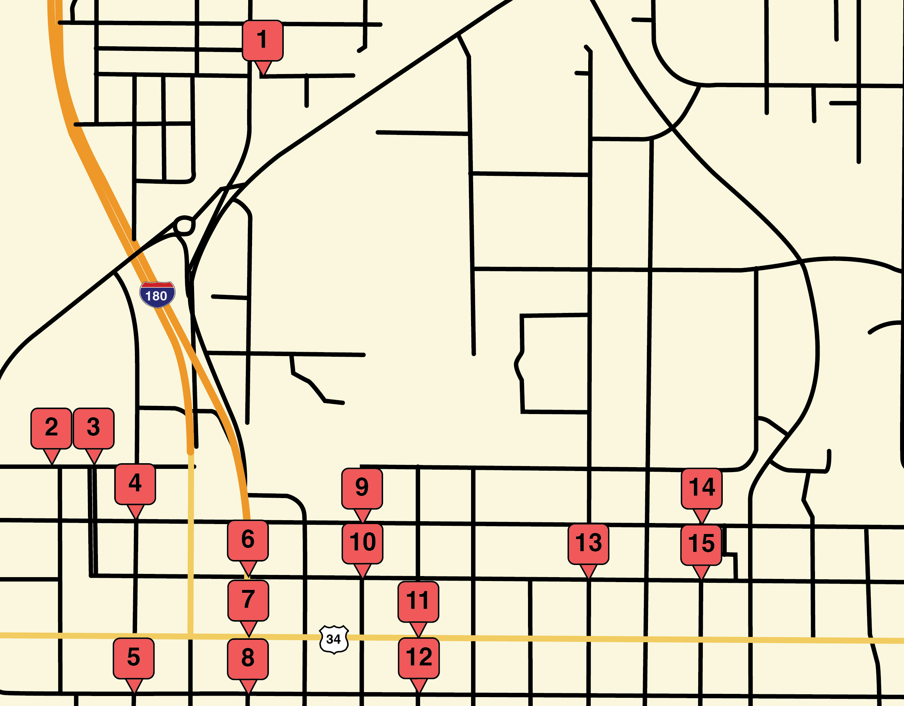
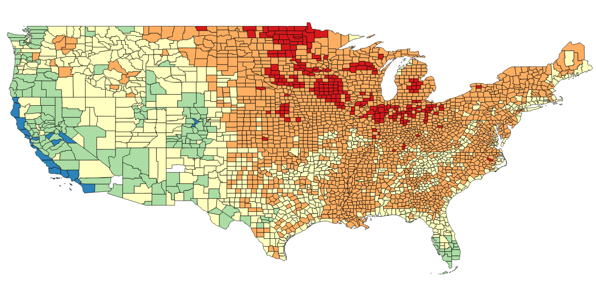
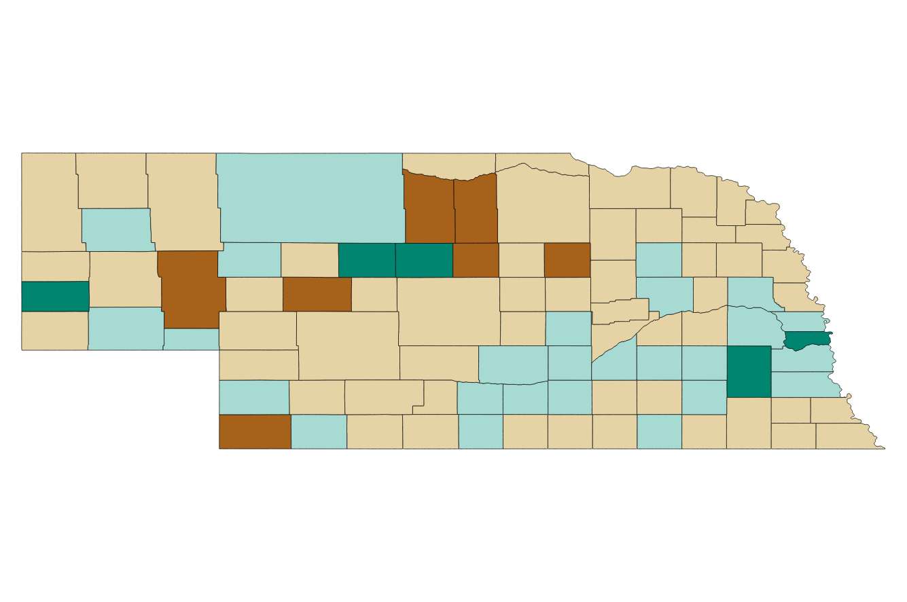

Private housing in downtown Lincoln
With the recent growth in private housing complexes in downtown Lincoln, I decided to look into just how many rooms are being built and how they have affected university housing numbers.

Top 50 counties in the US
Using the USDA's Natural Amenities index, I found the top 50 counties in the United States to live in, and created a map that visually showed the index for each county.

Nebraska population change by county
Using the USDA's Natural Amenities index, I found the top 50 counties in the United States to live in, and created a map that visually showed the index for each county.

Comparing university dining halls to downtown restaurants
Using the USDA's Natural Amenities index, I found the top 50 counties in the United States to live in, and created a map that visually showed the index for each county.